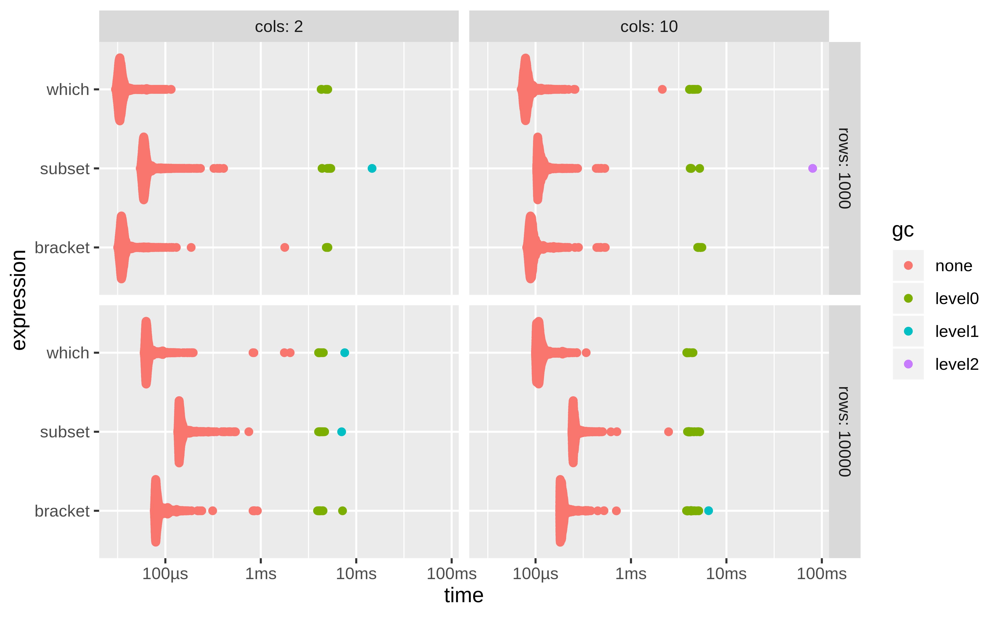
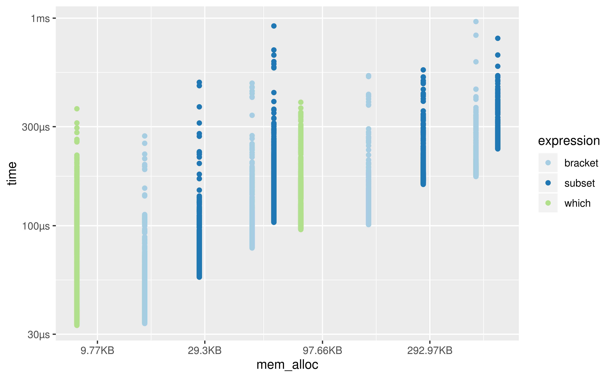

The goal of bench is to benchmark code, tracking execution time, memory allocations and garbage collections.
Installation
You can install the development version from GitHub with:
Features
bench::mark() is used to benchmark one or a series of expressions, we feel it has a number of advantages over alternatives.
- Always uses the highest precision APIs available for each operating system (often nanoseconds).
- Tracks memory allocations for each expression.
- Tracks the number and type of R garbage collections per expression iteration.
- Verifies equality of expression results by default, to avoid accidentally benchmarking inequivalent code.
- Has
bench::press(), which allows you to easily perform and combine benchmarks across a large grid of values. - Uses adaptive stopping by default, running each expression for a set amount of time rather than for a specific number of iterations.
- Expressions are run in batches and summary statistics are calculated after filtering out iterations with garbage collections. This allows you to isolate the performance and effects of garbage collection on running time (for more details see Neal 2014).
The times and memory usage are returned as custom objects which have human readable formatting for display (e.g. 104ns) and comparisons (e.g. x$mem_alloc > "10MB").
There is also full support for plotting with ggplot2 including custom scales and formatting.
Usage
bench::mark()
Benchmarks can be run with bench::mark(), which takes one or more expressions to benchmark against each other.
bench::mark() will throw an error if the results are not equivalent, so you don’t accidentally benchmark inequivalent code.
bench::mark(
dat[dat$x > 500, ],
dat[which(dat$x > 499), ],
subset(dat, x > 500))
#> Error: Each result must equal the first result:
#> `[` does not equal `[`Each result must equal the first result:
#> `dat` does not equal `dat`Each result must equal the first result:
#> `dat$x > 500` does not equal `which(dat$x > 499)`Each result must equal the first result:
#> `` does not equal ``Results are easy to interpret, with human readable units.
bnch <- bench::mark(
dat[dat$x > 500, ],
dat[which(dat$x > 500), ],
subset(dat, x > 500))
bnch
#> # A tibble: 3 x 6
#> expression min median `itr/sec` mem_alloc `gc/sec`
#> <bch:expr> <bch:tm> <bch:tm> <dbl> <bch:byt> <dbl>
#> 1 dat[dat$x > 500, ] 408µs 491µs 1998. 377KB 0
#> 2 dat[which(dat$x > 500), ] 250µs 371µs 2798. 260KB 2.31
#> 3 subset(dat, x > 500) 407µs 606µs 1750. 494KB 2.27By default the summary uses absolute measures, however relative results can be obtained by using relative = TRUE in your call to bench::mark() or calling summary(relative = TRUE) on the results.
bench::press()
bench::press() is used to run benchmarks against a grid of parameters. Provide setup and benchmarking code as a single unnamed argument then define sets of values as named arguments. The full combination of values will be expanded and the benchmarks are then pressed together in the result. This allows you to benchmark a set of expressions across a wide variety of input sizes, perform replications and other useful tasks.
set.seed(42)
create_df <- function(rows, cols) {
as.data.frame(setNames(
replicate(cols, runif(rows, 1, 100), simplify = FALSE),
rep_len(c("x", letters), cols)))
}
results <- bench::press(
rows = c(1000, 10000),
cols = c(2, 10),
{
dat <- create_df(rows, cols)
bench::mark(
min_iterations = 100,
bracket = dat[dat$x > 500, ],
which = dat[which(dat$x > 500), ],
subset = subset(dat, x > 500)
)
}
)
#> Running with:
#> rows cols
#> 1 1000 2
#> 2 10000 2
#> 3 1000 10
#> 4 10000 10
results
#> # A tibble: 12 x 12
#> expression rows cols min mean median max `itr/sec` mem_alloc n_gc n_itr total_time
#> <bch:expr> <dbl> <dbl> <bch:tm> <bch:tm> <bch:tm> <bch:tm> <dbl> <bch:byt> <dbl> <int> <bch:tm>
#> 1 bracket 1000 2 32.5µs 44.2µs 38.6µs 952.96µs 22643. 15.84KB 4 9996 441ms
#> 2 which 1000 2 32.4µs 39.2µs 37.3µs 547.92µs 25526. 7.91KB 5 9995 392ms
#> 3 subset 1000 2 51.5µs 63.1µs 57.9µs 912.45µs 15838. 27.7KB 5 7034 444ms
#> 4 bracket 10000 2 61.6µs 91.4µs 69.9µs 966.9µs 10943. 156.46KB 14 2991 273ms
#> 5 which 10000 2 52µs 68.6µs 58.3µs 1.34ms 14575. 78.23KB 12 5533 380ms
#> 6 subset 10000 2 101.9µs 144.9µs 115.7µs 1.11ms 6899. 273.79KB 18 2257 327ms
#> 7 bracket 1000 10 73.7µs 92µs 82.2µs 1.03ms 10873. 47.52KB 6 4760 438ms
#> 8 which 1000 10 66.5µs 78.8µs 73.5µs 915.93µs 12696. 7.91KB 7 5630 443ms
#> 9 subset 1000 10 94.2µs 113µs 104.1µs 984.53µs 8849. 59.38KB 6 3826 432ms
#> 10 bracket 10000 10 135.9µs 195.7µs 147.1µs 1.09ms 5110. 469.4KB 22 1510 296ms
#> 11 which 10000 10 86.4µs 106.3µs 96µs 1.03ms 9406. 78.23KB 9 3921 417ms
#> 12 subset 10000 10 175.7µs 263.7µs 199.8µs 1.18ms 3792. 586.73KB 20 1111 293msPlotting
ggplot2::autoplot() can be used to generate an informative default plot. This plot is colored by gc level (0, 1, or 2) and faceted by parameters (if any). By default it generates a beeswarm plot, however you can also specify other plot types (jitter, ridge, boxplot, violin). See ?autoplot.bench_mark for full details.

You can also produce fully custom plots by un-nesting the results and working with the data directly.
library(tidyverse)
results %>%
unnest() %>%
filter(gc == "none") %>%
mutate(expression = as.character(expression)) %>%
ggplot(aes(x = mem_alloc, y = time, color = expression)) +
geom_point() +
scale_color_bench_expr(scales::brewer_pal(type = "qual", palette = 3))
system_time()
bench also includes system_time(), a higher precision alternative to system.time().